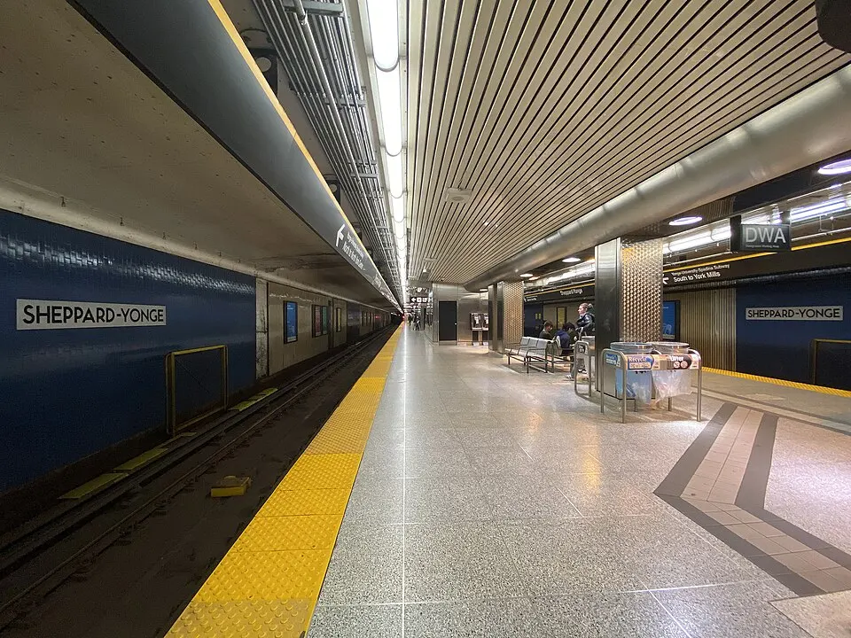

Signal
SignalStation atlas / Sheppard-Yonge
Station history
Sheppard-Yonge


Station history
The station opened as Sheppard when the Yonge subway extended north from York Mills to Finch.
The station acquired the name Sheppard-Yonge and stairs linking the original Yonge platform to the new Sheppard platforms.
The TTC formally opened the Sheppard subway and invited visitors to try the trains during an open house.
Regular Sheppard subway service began between this interchange and Don Mills.